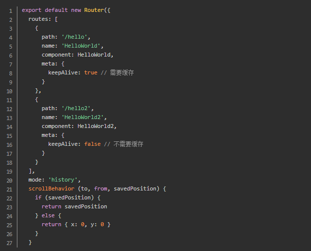
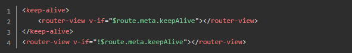
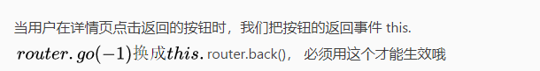

vue实现返回上一页面，页面停留在原来位置，不刷新
有时候会有这种情况。从列表页面进入详情页面，然后点击返回的时候，我们的接口会重新调用，页面也会跑到顶部， 这样用户体验是很不好的，每次用户都得从上往下从新翻，下面就给大家介绍如何解决这种问题
1.路由配置

2.配置App.vue文件种的 < router-view />

3.使用this.$router.back()返回

未完待续~~~